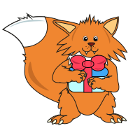
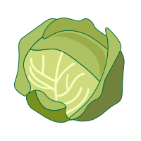
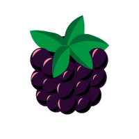
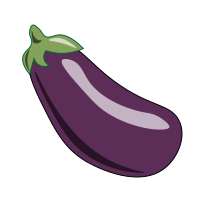
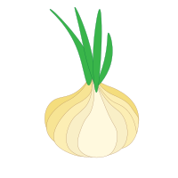

Звук [Ш] “Четвертый лишний”

Лиса принесла тебе задание! Она покажет 4 картинки, а ты определи, какая из картинок лишняя и почему. Потом скажи четко, выговаривая звук [Ш]: “Ли
ш
нее .... потому
ч
то ...” Потом нажми на галочку и проверь свой ответ! Удачи!

Капуста

Ежевика

Баклажан

Лук